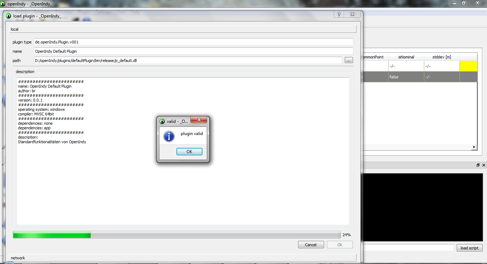

OpenIndy
user guide
https://github.com/openindy

Preperation
database
As one of the first steps you have to put the oisystemdb.sqlite to the OpenIndy executable (on Windows in the same folder with OpenIndy.exe).
This is neccessary the plugins we need to solve the measurement tasks. This databse handles all dependencies in the plugin and handles the communication
between the OpenIndy main program and the plugin, where all the functions and sensors are implemented.
library for linear algebra and dependencies
Like the databse you have to put openIndyLib.dll and OpenIndyLib.lib (for windows) in the same folder with the OpenIndy.exe. For other operating systems you
need to do the same with the equivalent files. Because the first version depends on armadillo, the openIndyLib depends on LAPACK and BLAS.
So on a windows system you have to put the LAPACK.dll, LAPACK.lib, BLAS.dll and BLAS.lib next to the OpenIndy.exe.
You can find the dlls and libs in the "lib" folder of OpenIndy in a 32bit and 64bit version.
load plugin in OpenIndy
Now, after all libraries and dependencies are copied to the right place, start OpenIndy.
As the last step of preperation you need to load the plugin in OpenIndy, so you can use all implemented functions and sensors. After this step you can start
with your task.
For loading the plugin go to the menu "Plugin" and click "load plugin". After this a new window opens, where you have to select the location of your plugin.
After accepting the folder dialog, OpenIndy shows you the metadata of the selected plugin and checks if it is valid. Press Ok and then ok in the window to load it.
OpenIndy will then automatically copy the plugin and all its dependencies to the plugin directory, so that it can work with it.

The load Plugin dialog